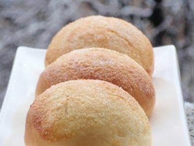

Recetas De Bollos
Homepage
Products
Services
Clients
Support
Welcome to Recetas De Bollos
Privacy policy
2021.06.18 21:41

Menu
Bollos suaves ⋆ Receta ⋆ Larousse Cocina
Receta de Bollos Fritos de Verano - El Gourmet
Bollos con crema | Recetas de Paraguay
Bollos de leche: receta casera para el desayuno - Okdiario
Bollos – Tembi'u Paraguay
Bollos fritos relleno de dulce Receta de Gime Cacerez .
Bollo casero: como hacer pan casero fácil y económico | Mira .
Bollos de leche o Suizos - Recetas de rechupete
Receta de bollos suizos | Blog de recetas de repostería .
Recetas de Bollos - 76 recetas
Bollos suaves ⋆ Receta ⋆ Larousse Cocina
Receta de Bollos Fritos de Verano - El Gourmet
Bollos con crema | Recetas de Paraguay
Bollos de leche: receta casera para el desayuno - Okdiario
Bollos – Tembi'u Paraguay
Bollos fritos relleno de dulce Receta de Gime Cacerez .
Bollo casero: como hacer pan casero fácil y económico | Mira .
Bollos de leche o Suizos - Recetas de rechupete
Receta de bollos suizos | Blog de recetas de repostería .
Recetas de Bollos - 76 recetas